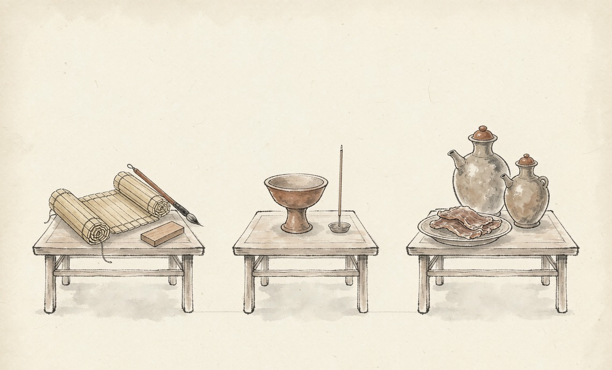
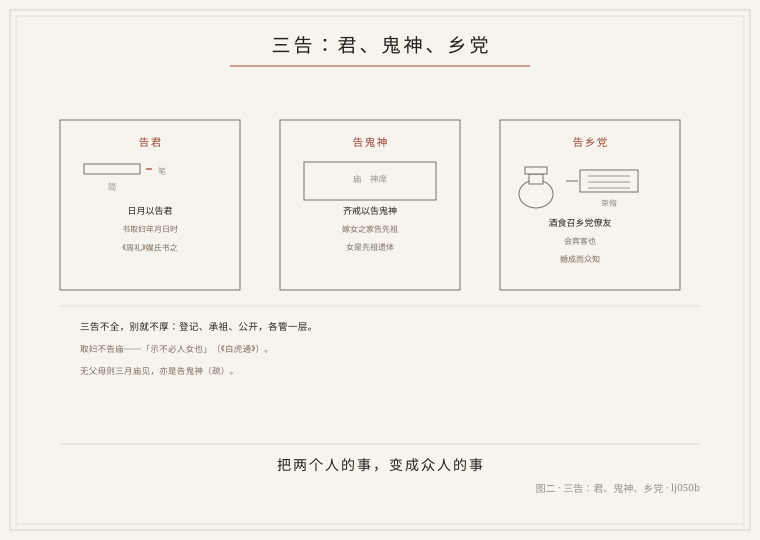

曲礼上 · 一·五十二 · 第 50 课
娶妇的年月日时，写下来告国君；斋戒告鬼神；备酒食召乡党僚友。三告之后，「以厚其别」——把两个人的事，变成众人知道的事。
说什么事：故日月以告君，齐戒以告鬼神，为酒食以召乡党僚友，以厚其别也。
落在哪一层：教。上节讲婚前的三级门，此节讲婚后的三处告。
为何编在此位：一·五十一讲「有凭」，此节讲「有证」；凭在两人之间，证在众人之间。
【经】故日月以告君，齊戒以告鬼神，為酒食以召鄉黨僚友，以厚其別也。
日月以告君 郑注：「《周礼》凡取判妻入子者，媒氏书之以告君，谓此也。」疏：「既男女须辨，故妇来，则书取妇之年月日时，以告国君也。」
齐戒以告鬼神 郑注：「《昏礼》凡受女之礼，皆于庙为神席以告鬼神，谓此也。」疏：「嫁女之家受于六礼，并在庙布席告先祖也。明女是先祖之遗体，不可专辄许人。而取妇之家，父命子亲迎，乃并自齐洁，但在己寝，不在庙也。所以尔者，《白虎通》云：『娶妻不告庙者，示不必人女也。』然夫家若无父母，则三月庙见，亦是告鬼神。」
为酒食以召乡党僚友 郑注：「会宾客也。」
以厚其别也 郑注：「厚，重慎也。」
所以把娶妇的年月日告国君，斋戒以告鬼神，备酒食召乡党僚友——以此加重那分别。
三告：告君是登记，告鬼神是承祖，告乡党僚友是公开。三者合起来，才叫「厚其别」：别之所以厚，不在两人之间说得清，而在众人都知道。
第一层 告君：留下日子 注引《周礼·媒氏》「凡取判妻入子者，媒氏书之以告君」。所书者是「年月日时」。婚姻在礼里有一份可查的日期，不是私事无凭。
第二层 告鬼神：女是先祖的遗体 疏说得重：「明女是先祖之遗体，不可专辄许人。」嫁女之家在庙布席告先祖；取妇之家父命子亲迎，齐洁在己寝而不在庙。
第三层 取妇不告庙 疏引《白虎通》「娶妻不告庙者，示不必人女也」——不敢说人家一定把女儿给过来。这一句最见分寸：告鬼神是诚，不告庙是谦。
第四层 告乡党僚友：把私事变成公事 注只说「会宾客也」。酒食一摆，婚事就成了邻里共知之事；「厚其别」的「厚」，正是众人共知之后的分量。
与今日何干 今日有登记、有婚礼、有朋友圈。登记是告君，婚礼是告亲友，中间那一层「告鬼神」多半没了。此节提醒的是：三者不全，别就不厚。
| 左 | 右 |
|---|---|
| 日月以告君 | 媒氏书取妇年月日时以告君 |
| 齐戒以告鬼神 | 嫁女之家于庙布席告先祖 |
| 取妇之家 | 父命子亲迎，齐洁在寝不在庙 |
| 娶妻不告庙 | 示不必人女也（《白虎通》） |
| 无父母则三月庙见 | 亦是告鬼神 |
| 为酒食以召乡党僚友 | 会宾客也 |
| 以厚其别 | 厚，重慎也 |

